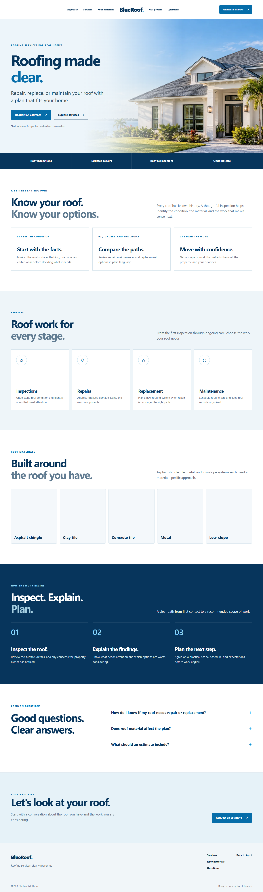
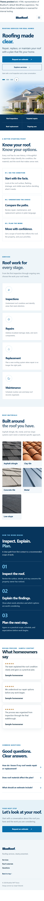
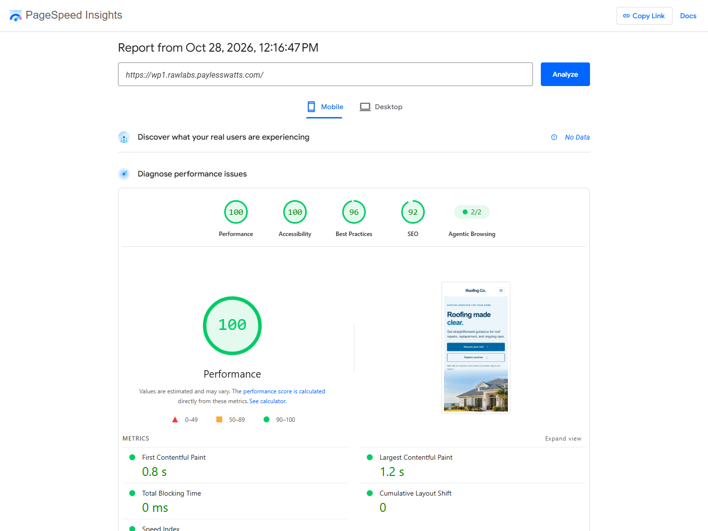
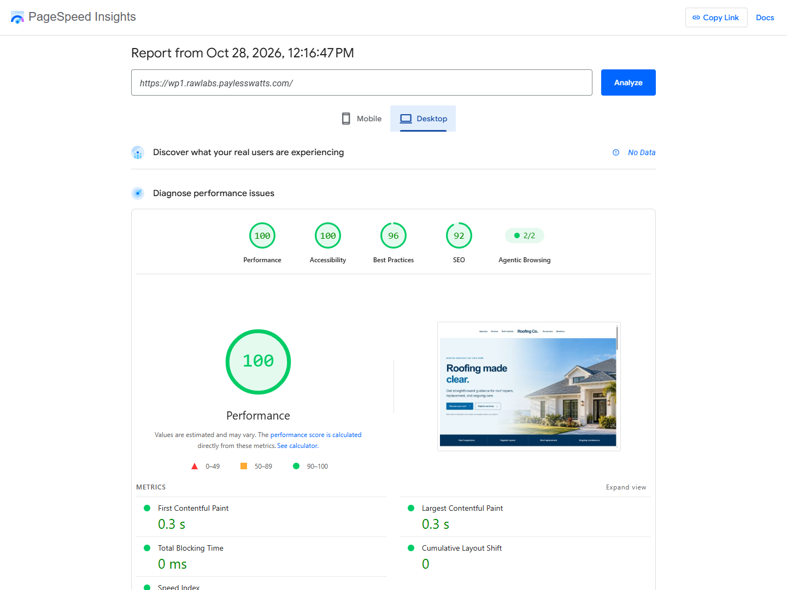

DESKTOP / FULL PAGE


Desktop experienceOpen HTML representation ↗
WEB / WORDPRESS / THEME CASE STUDY
A polished roofing website, built for the next click.
Explore the default WordPress experience through this responsive HTML preview.
01 / RESPONSIVE PREVIEW
Explore the complete desktop and mobile layouts, including service content, roof materials, process, FAQs, and estimate path.


02 / PERFORMANCE EVIDENCE
One PageSpeed Insights lab run on the populated homepage. Dated screenshots preserve the report from that update.
Performance

Performance

This October 28 lab run had no CrUX field data and recorded a missing theme script and meta description. Version 0.1.1 has since been installed: the script loads, mobile navigation works, and the homepage includes a meta description. The scores shown belong to the original run. Review the full dated log for the original audit notes.
03 / CUSTOMER VALUE
Clear sections, familiar actions, and room to make the design fit a local contractor’s business.
Organize inspection, repair, replacement, and maintenance information in a readable sequence.
Use dedicated material visuals for asphalt shingles, clay tile, concrete tile, metal, and low-slope roofing.
Prominent estimate links and a responsive navigation system help visitors find their way through the page.
Support a custom logo, adjustable logo sizing, a centered split menu, and a compact header on scroll.
04 / BUILD SHEET
The release is a custom classic WordPress theme. The client preview is kept separate from the private theme source package.
Theme templates, setup, and WordPress integration.
Classic theme structure, menus, Customizer, and homepage pattern.
Semantic content, native details, and accessible navigation labels.
Responsive layout, branding controls, and reduced-motion support.
Small deferred behavior for the menu and compact scroll header.
Responsive hero sources and lazy-loaded roof-material images.
05 / PROJECT STATUS
BlueRoof v0.1.1 brings a focused roofing homepage, responsive navigation, and a compact WordPress theme structure together. This repository documents the design and development work.
Explore the HTML preview, inspect desktop and mobile screenshots, and review the dated performance evidence. The preview contact form demonstrates the design without collecting information.